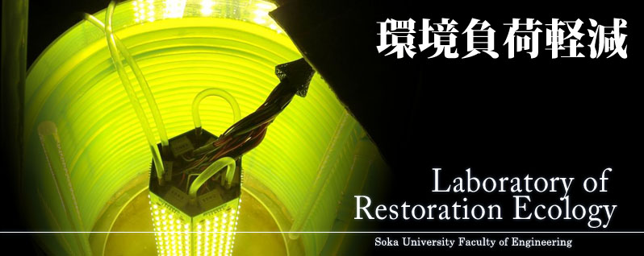

<div id="wrapper_top">
  <div id="wrapper_bottom">
    <div id="cover">
      <div class="swiper-container">
        <ul class="swiper-wrapper">
          <li class="swiper-slide swiper-slide2">
            
          </li>
          <li class="swiper-slide swiper-slide3">
            
          </li>
          <li class="swiper-slide swiper-slide4">
            
          </li>
          <li class="swiper-slide swiper-slide5">
            
          </li>
        </ul>
        <div class="swiper-pagination"></div>
      </div>
    </div>

    <div id="body">
      {% include side_nav_en.html %}

      <div id="right">
        <div id="contents">
          <h3 id="updates">News</h3>
          <table id="topics"></table>
          <a class="read_more" href="news.html">Read more</a>
          <h3 id="facebook">Facebook</h3>
          <div class="fb-container">
            <div
              class="fb-page"
              data-href="https://www.facebook.com/TodaLab/"
              data-tabs="timeline"
              data-width="500"
              data-height="700"
              data-small-header="true"
              data-adapt-container-width="true"
              data-hide-cover="true"
              data-show-facepile="false"
            >
              <blockquote
                cite="https://www.facebook.com/TodaLab/"
                class="fb-xfbml-parse-ignore"
              >
                <a href="https://www.facebook.com/TodaLab/"
                  >修復生態学研究室 - LRE</a
                >
              </blockquote>
            </div>
            <div class="fb-border-bottom"></div>
          </div>
        </div>
      </div>
      <div class="clear"></div>
    </div>
    <div id="pre-footer">
      <div
        class="fb-like"
        data-share="true"
        data-width="450"
        data-show-faces="true"
      ></div>
    </div>
  </div>
  <div id="footer">
    <div id="info">
      <span
        >1-236 Tangi-cho, Hachioji, Tokyo 192-8577, Japan
        <a
          href="mailto:&#116;&#111;&#100;&#97;&#64;&#115;&#111;&#107;&#97;&#46;&#97;&#99;&#46;&#106;&#112;&#32;"
          >&#116;&#111;&#100;&#97;&#64;&#115;&#111;&#107;&#97;&#46;&#97;&#99;&#46;&#106;&#112;&#32;</a
        ></span
      >
    </div>
    <div id="copyright">
      <span
        >Copyright Toda Laboratory. Soka University. All Right Reserved.</span
      >
    </div>
  </div>
</div>
<script src="../assets/templates/js/swiper.min.js"></script>
<script src="../assets/templates/js/lightbox.min.js"></script>
